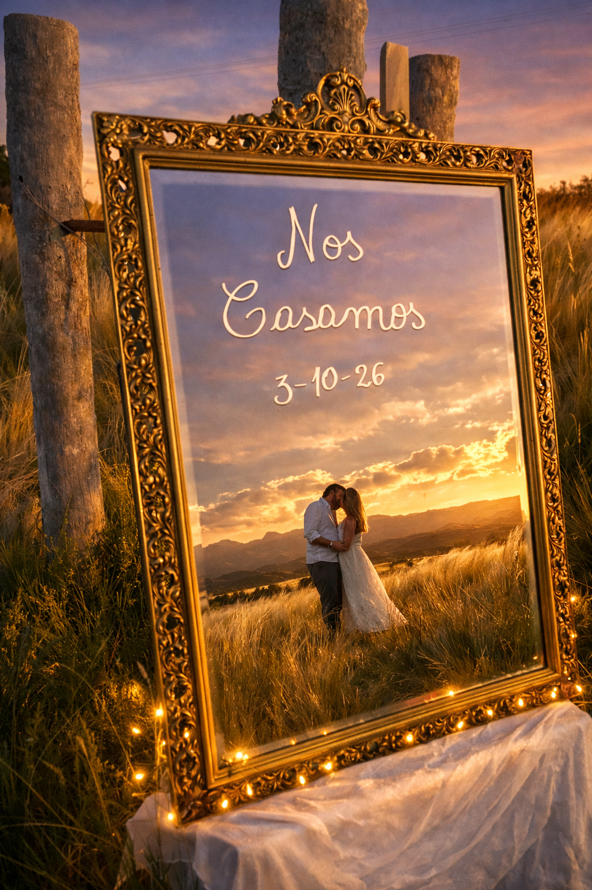

Nos Casamos
Guadalupe & Ayrton
3 de Octubre, 2026
Cronograma
Los esperamos para celebrar juntos
Cena
Fiesta
Dress code
Elegante / Semi-formal
Contacto
Si tenés alguna consulta, escribinos
Si querés hacernos un regalo
Tu presencia es nuestro mejor regalo, pero si querés tener un detalle
Alias
ayrtonmarini.mp